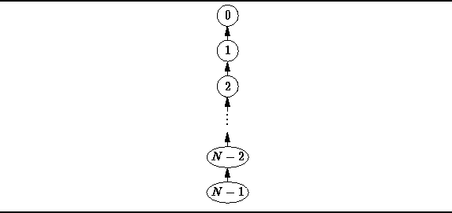
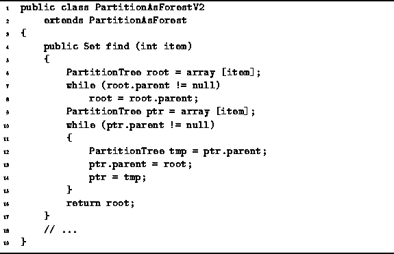
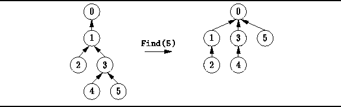

Data Structures and Algorithms
with Object-Oriented Design Patterns in Java
Data Structures and Algorithms
with Object-Oriented Design Patterns in Java
Unfortunately, using the join algorithm
given in Program  can result in particularly bad trees.
For example, Figure shows the worst possible tree that can be obtained.
Such a tree is bad because its height is O(N).
In such a tree both the worst case and the average case running time
for the find operation is O(N).
can result in particularly bad trees.
For example, Figure shows the worst possible tree that can be obtained.
Such a tree is bad because its height is O(N).
In such a tree both the worst case and the average case running time
for the find operation is O(N).

Figure: A degenerate tree.
There is an interesting trick we can play that can improve matters significantly. Recall that the find operation starts from a given node and locates the root of the tree containing that node. If, having found the root, we replace the parent of the given node with the root, the next time we do a find it will be more efficient.
In fact, we can go one step further and replace the parent of every node along the search path to the root. This is called a collapsing find operation. Doing so does not change the asymptotic complexity of the find operation. However, a subsequent find operation which begins at any point along the search path to the root will run in constant time!
Program gives the code for
a collapsing version of the find operation.
The find method first determines the root node as before.
Then, a second pass is made up the chain from the initial node to the root,
during which the parent of each node is assigned the root.
Clearly, this version of find is slower than the
one given in Program because it makes two passes
up the chain rather than one.
However, the running of this version of find is still O(d),
where d is the depth of the node from which the search begins.

Program: PartitionAsForest class collapsing find method.
Figure illustrates the effect of a collapsing find operation.
After the find,
all the nodes along the search path are attached directly to the root.
That is, they have had their depths decreased to one.
As a side-effect, any node which is in the subtree of a node along the search
path may have its depth decreased by the collapsing find operation.
The depth of a node is never increased by the find operation.
Eventually, if we do enough collapsing find operations,
it is possible to obtain a tree of height one
in which all the non-root nodes point directly at the root.

Figure: Example of collapsing find.
 Copyright © 1998 by Bruno R. Preiss, P.Eng. All rights reserved.
Copyright © 1998 by Bruno R. Preiss, P.Eng. All rights reserved.